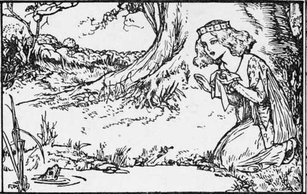

The Frog-Prince
Description
This section is from the book "Household Tales by Brothers Grimm", by Brothers Grimm. Also available from Amazon: Household Tales by Brothers Grimm.
The Frog-Prince
One fine evening a young princess put on her bonnet and clogs, and went out to take a walk by herself in a wood; and when she came to a cool spring of water, that rose in the midst of it, she sat herself down to rest awhile. Now she had a golden ball in her hand, which was her favourite plaything; and she was always tossing it up into the air, and catching it again as it fell. After a time she threw it up so high that she missed catching it as it fell; and the ball bounded away, and rolled along upon the ground, till at last it fell down into the spring. The princess looked into the spring after her ball, but it was very deep, so deep that she could not see the bottom of it. Then she began to bewail her loss, and said, " Alas! if I could only get my ball again, I would give all my fine clothes and jewels, and everything that I have in the world." Whilst she was speaking, a frog put its head out of the water, and said, "Princess, why do you weep so bitterly?" "Alas!" said she, "what can you do for me, you nasty frog? My golden ball has fallen into the spring." The frog said, "I want not your pearls, and jewels, and fine clothes; but if you will love me, and let me live with you and eat from off your golden plate, and sleep upon your bed, I will bring you your ball again." " What nonsense," thought the princess, "this silly frog is talking! He can never even get out of the spring to visit me, though he may be able to get my ball for me, and therefore I will tell him he shall have what he asks." So she said to the frog, "Well, if you will bring me my ball, I will do all you ask." Then the frog put his head down, and dived deep under the water; and after a little while he came up again, with the ball in his mouth, and threw it on the edge of the spring. As soon as the young princess saw her ball, she ran to pick it up; and she was so overjoyed to have it in her hand again, that she never thought of the frog, but ran home with it as fast as she could. The frog called after her, "Stay, princess, and take me with you as you said." But she did not stop to hear a word.
The next day, just as the princess had sat down to dinner, she heard a strange noise—tap, tap—plash, plash —as if something was coming up the marble staircase: and soon afterwards there was a gentle knock at the door, and a little voice cried out and said—
" Open the door, my princess dear. Open i0e boor to thy true love here! And mind the words that thou and I said By the fountain cool, in the greenwood shade."
Then the princess ran to the door and opened it, and there she saw the frog, whom she had quite forgotten.
At this sight she was sadly frightened, and shutting the door as fast as she could came back to her seat. The king, her father, seeing that something had frightened her, asked her what was the matter. "There is a nasty frog," said she, "at the door, that lifted my ball for me out of the spring this morning: I told him that he should live with me here, thinking that he could never get out of the spring; but there he is at the door, and he wants to come in."
While she was speaking the frog knocked again at the door, and said—
" Open the door, my princess dear. Open i0e boor to thy true love here! And mind the words that thou and I said By the fountain cool, in the greenwood shade."
Then the king said to the young princess, "As you have given your word you must keep it; so go and let him in." She did so, and the frog hopped into the room, and then straight on—tap, tap—plash, plash—from the bottom of the room to the top, till he came up close to the table where the princess sat. " Pray lift me upon a chair," said he to the princess, " and let me sit next to you." As soon as she had done this, the frog said, "Put your plate nearer to me, that I may eat out of it." This she did, and when he had eaten as much as he could, he said, " Now I am tired; carry me up stairs, and put me into your bed." And the princess, though very unwilling, took him up in her hand, and put him upon the pillow of her own bed, where he slept all night long. As soon as it was light he jumped up, hopped down stairs, and went out of the house. " Now, then," thought the princess, " at last he is gone, and I shall be troubled with him no more."
But she was mistaken ; for when night came again she heard the same tapping at the door; and the frog came once more, and said—
" Open the door, my princess dear. Open i0e boor to thy true love here! And mind the words that thou and I said By the fountain cool, in the greenwood shade."
And when the princess opened the door the frog came in, and slept upon her pillow as before, till the morning broke. And the third night he did the same. But when the princess awoke on the following morning she was astonished to see, instead of the frog, a handsome prince, gazing on her with the most beautiful eyes she had ever seen, and standing at the head of her bed.
He told her that he had been enchanted by a spiteful fairy, who had changed him into a frog; and that he had been fated so to abide till some princess should take him out of the spring, and let him eat from her plate, and sleep upon her bed for three nights. "You," said the prince, " have broken this cruel charm, and now I have nothing to wish for but that you should go with me into my father's kingdom, where I will marry you, and love you as long as you live."
The young princess, you may be sure, was not long in saying " Yes" to all this; and as they spoke a gay coach drove up, with eight beautiful horses, decked with plumes of feathers and golden harness ; and behind the coach rode the prince's servant, faithful Heinrich, who had bewailed the misfortunes of his dear master during his enchantment so long and so bitterly, that his heart had well-nigh burst.
They then took leave of the king, and got into the coach with eight horses, and all set out, full of joy and merriment, for the prince's kingdom, which they reached safely ; and there they lived happily a great many years.
Continue to:
Tags
fairy tales, children's stories, brothers grimm, household tales